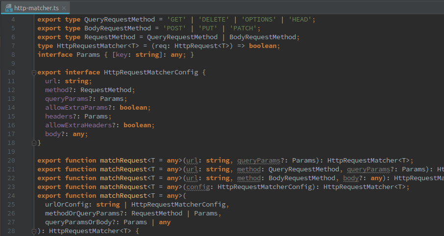

I Hereby
Declare
Understanding Typescript Definition Files
What are .d.ts files?
- TypeScript definition files
- C header files (
.h)
- C header files (
- Interface with JavaScript files
- Type Checking
Why do I care?
- Legacy code
- Migration
- Third-party Libraries
- Intellisense
- Publishing on npm
- Applications for regular
.ts
Getting Started
tsc -d <file>.ts

File Endings
.ts
- Explicity imported
- Contains code and/or declarations
.d.ts
- Automatically imported
- Imported by name
index.d.tsin package.json- Must
declareeverything at top level - Is a
.tsfile - all the same rules apply - Use when dealing with external code
The declare keyword
The TypeScript declare keyword is used to declare variables that may not have originated from a TypeScript file.
- All variables inside
.tsfiles are either exported or invisible - Global Scope
- Examples: jQuery
$, Google Analyticsga
ga.js
window.ga = ga || [];analytics.ts
ga.push('pageview'); // error TS2304: Cannot find name 'ga'.
declare const ga: string[];
ga.push('pageview'); // OK
Concepts
- Type
- Value
- Namespace
Concepts: Types
type T = number | stringinterface I { v: T }class C {}enum E { A, B, C }import { T } from 'm'
Concepts: Values
const foo = 'bar' // let, varfunction hello()enum E { A, B, C }class C {}namespace n { const x }module m { const x }import { v } from 'm'
Namespaces
-
namespace N { interface I { v: T } }const x: A.B.C // Typesconst x = A.B.x // Values
Both Value and Type
-
Class
- Interface
- Constructor function
-
Enum
- Type
- Enum object
Module vs Namespace
namespace
- JavaScript Object
- Can export selectively from inside
namespace
module
- Old name: "External Modules"
- Only
declared in.d.tsfiles - 1
.tsfile = 1module
Compiled output

So what does this mean?

-
We think
Promiseis a class (value), but the compiler only has an interface (type) - In this case: Ambient import vs. explicit import
-
We forgot to declare the right library in our
tsconfig.json!
Merging
- Overloading
- Multiple definitions as if they were one
interface Foo { a: string; } interface Foo { b: number; } // Result interface Foo { a: string; b: number; } - Allows representing real-life JS library behaviour
const now: moment.Moment = moment(); // Example declaration namespace moment { interface Moment {} } function moment(): moment.Moment; - Can merge anything that doesn't cause a conflict
Merge Rules: Conflicts
-
Different types for the same name
interface Foo { a: string; } interface Foo { a: number; } // Result error TS2727: Subsequent property declarations must have the same type. Property 'a' must be of type 'string', but here has type 'number'.
Merge Rules: Conflicts
-
Type aliases
type Direction = 'left'; type Direction = 'right'; // Result error TS2300: Duplicate identifier 'Direction'.
Merge Rules: Conflicts
-
Values
let Direction = 'left'; function Direction(): string; // Result error TS2300: Duplicate identifier 'Direction'. -
Exception: namespaces
function time(): Date; namespace time { const startOfTime: number = 0; now(): Date; } - Namespaces never conflict
Merge Rules: Namespaces
-
Namespaces never conflict
-
...but the things inside them might (if they're exported)
export namespace n { export interface F { a: string; } } export namespace n { export interface F { a: number; } } // Result Subsequent property declarations must have the same type. Property 'a' must be of type 'string', but here has type 'number'.
-
...but the things inside them might (if they're exported)
Merge Rules: Exporting
- All exported types and values are visible
- Exporting works from inside namespaces
- Non-exported values inside namespaces are "private"
export namespace zoo {
export interface Mammal { legs: number; }
interface Dinosaur {}
}
export namespace zoo {
export interface Mammal { furType: string; }
export class Rabbit implements Mammal {
legs: number;
furType: string;
friend: Dinosaur; // Error
}
export const bunny = new Rabbit();
}Example: Jasmine Matchers
const testElement = fixture.debugElement.query(By.css('.test'));
expect(testElement).toBePresent();jasmine.addMatchers({
toBePresent: () => ({
compare: (actual: DebugElement | null | void, message?: string) => {
return {
pass: !!actual,
message: `Expected element ${ actual ? 'not ' : ''}to be present` +
(message ? `: ${message}` : '')
};
}
}),
};declare namespace jasmine {
export interface Matchers<T> {
/**
* Tests whether a given DebugElement is present in the DOM.
* @param {string} message (optional) message to display on failure.
*/
toBePresent(message?: string): boolean;
}
}Overloading: HTTP Matcher
Overloading: Intellisense

Problem: String IDs
interface Order {
id: string;
...
}
class OrderService {
getOrder(orderId: string): Order {}
}- How to ensure correct call?
stringcould come from anywhereorderService.getOrder(customerId);
Pattern: Phantom Types
interface Order {
id: OrderId;
...
}
interface OrderId extends String {
__order_id_phantom__: never;
}
class OrderService {
getOrder(orderId: OrderId): Order {
return this.http.get(`http://api.dev/orders/${orderId}`);
}
}- Cannot assign to
never OrderIdis still a String- But no other string is an OrderId
Pattern: Phantom Types
const orderId: string = router.queryParams.orderId;
orderService.getOrder(orderId); // errorfunction ensureOrderId(id: string): OrderId {
if (!id || !id.match(ORDER_ID_PATTERN)) {
throw new Error(`ID "${id}" does not look like a valid OrderId!`);
}
return id as OrderId;
}
const orderId: string = ensureOrderId(router.queryParams.orderId);
orderService.getOrder(orderId); // OKExample: node-uuid
https://github.com/broofa/node-uuid
API
uuid()
Generates a v4 UUID.
uuid.v1([options [, buffer [, offset]]])
Generate and return a RFC4122 v1 (timestamp-based) UUID.
uuid.v4([options [, buffer [, offset]]])
Generate and return a RFC4122 v4 UUID.
options - (Object)
random - (Number[16]) Array of 16 numbers (0-255) to use instead of random ones
rng - (Function) Random # generator to use.
Set to one of the built-in generators:
- uuid.mathRNG (all platforms),
- uuid.nodeRNG (node.js only),
- uuid.whatwgRNG (WebKit only),
- custom function that returns an array[16] of byte values.
buffer - (Array | Buffer) Array or buffer where UUID bytes are to be written.
offset - (Number) Starting index in buffer at which to begin writing.function uuid(): string;function uuid(): typeof uuid.v4;
namespace uuid {
function v1(): string;
function v4(): string;
}function uuid(): string;
namespace uuid {
// Placeholders until we figure them out
type Rng = any;
type OutputBuffer = any;
interface V4Options {
random?: number[];
rng?: Rng;
buffer?: OutputBuffer;
}
function v1(): string;
function v4(
options?: V4Options,
buffer?: OutputBuffer,
offset?: number
): string | OutputBuffer;
}/// <reference types="node" />
// Imports all types from @types/node/index.d.ts
function uuid(): string;
namespace uuid {
type Rng = any;
type OutputBuffer = number[] | Buffer; // Imported from node
interface V4Options {
random?: number[];
rng?: Rng;
buffer?: OutputBuffer;
}
function v1(): string;
function v4(
options?: V4Options,
buffer?: OutputBuffer,
offset?: number
): string | OutputBuffer;
}/// <reference types="node" />
function uuid(): string;
namespace uuid {
type Rng = any;
type OutputBuffer = number[] | Buffer;
interface V4Options {
random?: number[];
rng?: Rng;
}
interface V4WithBufferOptions extends V4Options {
buffer: OutputBuffer;
}
function v1(): string;
function v4(options?: V4Options): string;
function v4(options: V4WithBufferOptions): OutputBuffer;
function v4(options: V4Options, buffer: OutputBuffer, offset?: number): OutputBuffer;
}/// <reference types="node" />
function uuid(): string;
namespace uuid {
type Rng = any;
type OutputBuffer = number[] | Buffer;
interface V4Options {
random?: number[];
rng?: Rng;
}
interface V4WithBufferOptions<T extends OutputBuffer> extends V4Options {
buffer: T;
}
function v1(): string;
function v4(options?: V4Options): string;
function v4<T extends OutputBuffer>(options: V4WithBufferOptions<T>): T;
unction v4<T extends OutputBuffer>(options: V4Options, buffer: T, offset?: number): T;
}/// <reference types="node" />
const uuid: typeof uuid.v4;
namespace uuid {
interface ProvidedRng {
__internal_rng_phantom__: never;
}
const mathRNG: ProvidedRng;
const nodeRNG: ProvidedRng;
const whatwgRNG: ProvidedRng;
interface CustomRng { (): number[] } // Returns number[16];
type Rng = ProvidedRng | CustomRng;
type OutputBuffer = number[] | Buffer;
interface V4Options {
random?: number[];
rng?: Rng;
}
interface V4WithBufferOptions<T extends OutputBuffer> extends V4Options {
buffer: T;
}
function v1(): string;
function v4(options?: V4Options): string;
function v4<T extends OutputBuffer>(options: V4WithBufferOptions<T>): T;
function v4<T extends OutputBuffer>(options: V4Options, buffer: T, offset?: number): T;
}
export = uuid;Result
@types / DefinitelyTyped
- https://github.com/DefinitelyTyped/DefinitelyTyped
yarn add -D @types/<package>